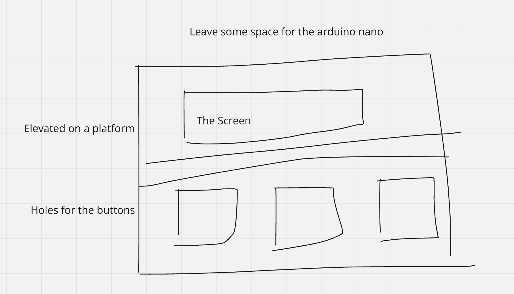
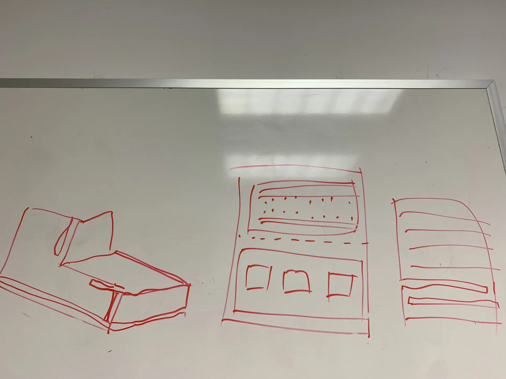
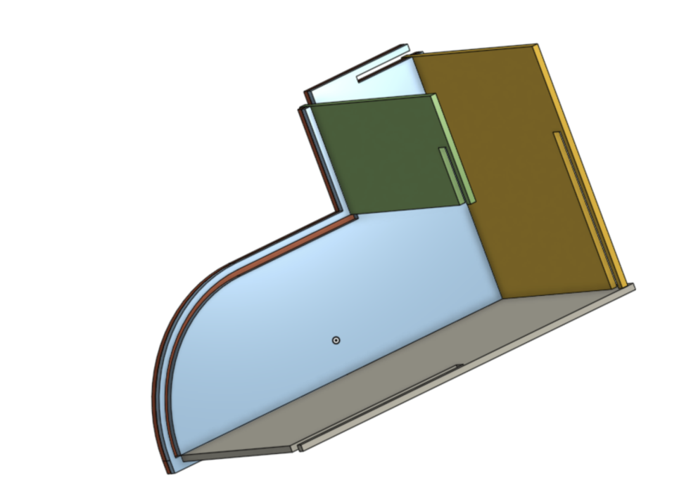
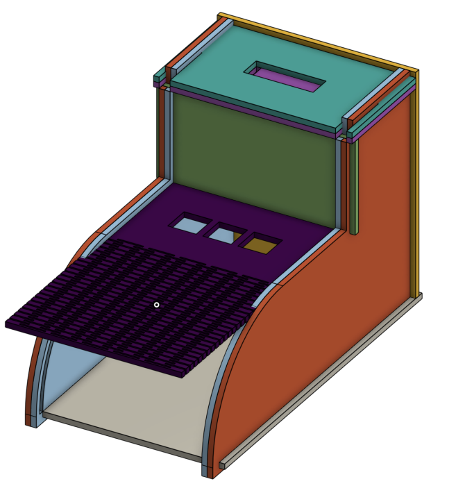
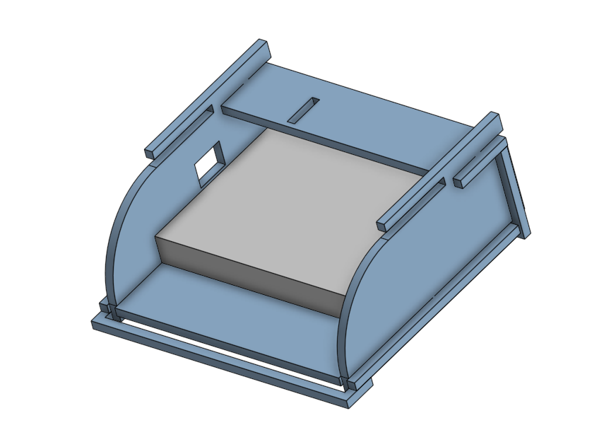
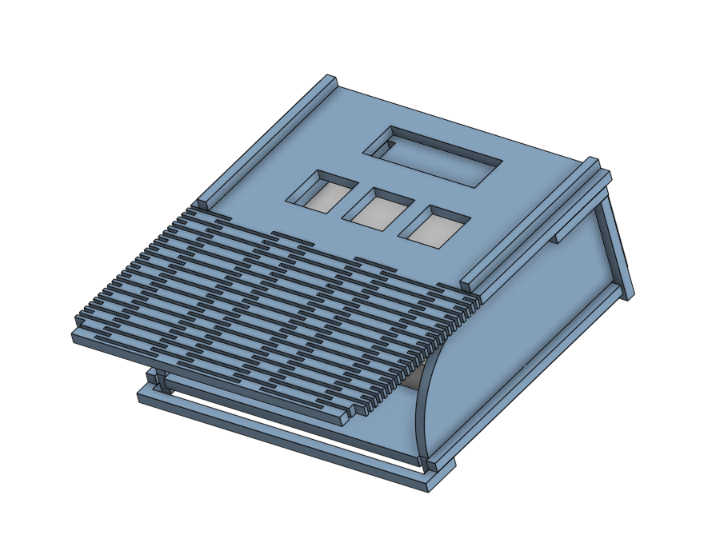
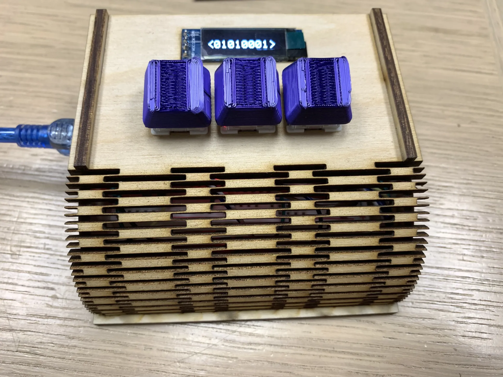

Convict Cantaloupe's Binary Keyboard Project: https://www.instagram.com/melon_of_ill_intent/reel/C0XIK5LJHux/
The goal of this project is to create a project for Project in a Box's project series. Project in a Box has the mission of providing hands technical education to students from kindergarten to university.
These were the initial ideas for designing the case. They progressively become more developed.


These were the initial prototypes for the project. I decided to switch the display from a LCD display to an OLED display to create less cluttered wiring, which is better suited for the given goal. Then, I switched the push buttons to keyboard switches for a better user experience.




The finished design is shown below. The video shows a potential improvement to the software; scrolling the text instead of flashing it on the OLED screen.

https://www.instructables.com/Curved-laser-bent-wood/
We used the instructables tutorial to learn how to make wood bendable with a laser cutter. It also helped us understand the patterns used to make wood bend into certain shapes.